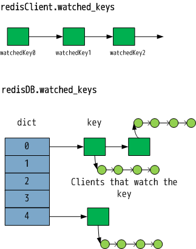

键值的监视
稍后再展开事务执行和取消的部分。
redis 的官方文档上说，WATCH 命令是为了让 redis 拥有 check-and-set(CAS)的特性。CAS 的意思是，一个客户端在修改某个值之前，要检测它是否更改；如果没有更改，修改操作才能成功。
一个不含 CAS 特性的例子：
0 | get score(score=10) | | 1 | | get score(score=10)| 2 | temp=score+1(temp=11) | temp=score+1(temp=11)| 3 | | set score temp(score=11) | 4 | set score temp(score=11)| | 5 | final: score=11 |final: score=11|
含有 CAS 特性的例子：
| seq | client A | client B |
|---|---|---|
| 0 | get score(score=10) | |
| 1 | get score(score=10) | |
| 2 | temp=score+1(temp=11) | temp=score+1(temp=11) |
| 3 | （服务器标记 score 已经被修改） | set score temp(score=11) |
| 4 | set score temp(score=11) (failed!!!) | |
| 5 | final: score=11 | final: score=11 |
| 6 | get score(score=11) | |
| 7 | temp=score+1(temp=12) | |
| 8 | set score temp(score=12) | |
| 9 | final: score=12 |
在后一个例子中，client A 第一次尝试修改失败，因为 client B 修改了 score.client A 失败过后，再次尝试修改才成功。redis 事务的 CAS 特性借助了键值的监视。
redis 数据集结构体 redisDB 和客户端结构体 redisClient 都会保存键值监视的相关数据。

监视键值的过程：
// WATCH 命令执行函数
void watchCommand(redisClient *c) {
int j;
// WATCH 命令不能在 MULTI 和 EXEC 之间调用
if (c->flags & REDIS_MULTI) {
addReplyError(c,"WATCH inside MULTI is not allowed");
return;
}
// 监视所给出的键
for (j = 1; j < c->argc; j++)
watchForKey(c,c->argv[j]);
addReply(c,shared.ok);
}
// 监视键值函数
/* Watch for the specified key */
void watchForKey(redisClient *c, robj *key) {
list *clients = NULL;
listIter li;
listNode *ln;
watchedKey *wk;
// 是否已经监视该键值
/* Check if we are already watching for this key */
listRewind(c->watched_keys,&li);
while((ln = listNext(&li))) {
wk = listNodeValue(ln);
if (wk->db == c->db && equalStringObjects(key,wk->key))
return; /* Key already watched */
}
// 获取监视该键值的客户端链表
/* This key is not already watched in this DB. Let's add it */
clients = dictFetchValue(c->db->watched_keys,key);
// 如果不存在链表，需要新建一个
if (!clients) {
clients = listCreate();
dictAdd(c->db->watched_keys,key,clients);
incrRefCount(key);
}
// 尾插法。将客户端添加到链表尾部
listAddNodeTail(clients,c);
// 将监视键添加到 redisClient.watched_keys 的尾部
/* Add the new key to the list of keys watched by this client */
wk = zmalloc(sizeof(*wk));
wk->key = key;
wk->db = c->db;
incrRefCount(key);
listAddNodeTail(c->watched_keys,wk);
}
当客户端键值被修改的时候，监视该键值的所有客户端都会被标记为 REDIS_DIRTY_CAS，表示此该键值对被修改过，因此如果这个客户端已经进入到事务状态，它命令队列中的命令是不会被执行的。
touchWatchedKey() 是标记某键值被修改的函数，它一般不被 signalModifyKey() 函数包装。下面是 touchWatchedKey() 的实现。
// 标记键值对的客户端为 REDIS_DIRTY_CAS，表示其所监视的数据已经被修改过
/* "Touch" a key, so that if this key is being WATCHed by some client the
* next EXEC will fail. */
void touchWatchedKey(redisDb *db, robj *key) {
list *clients;
listIter li;
listNode *ln;
// 获取监视 key 的所有客户端
if (dictSize(db->watched_keys) == 0) return;
clients = dictFetchValue(db->watched_keys, key);
if (!clients) return;
// 标记监视 key 的所有客户端 REDIS_DIRTY_CAS
/* Mark all the clients watching this key as REDIS_DIRTY_CAS */
/* Check if we are already watching for this key */
listRewind(clients,&li);
while((ln = listNext(&li))) {
redisClient *c = listNodeValue(ln);
// REDIS_DIRTY_CAS 更改的时候会设置此标记
c->flags |= REDIS_DIRTY_CAS;
}
}